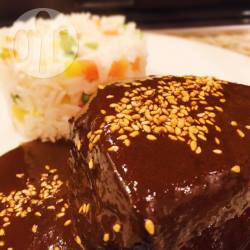
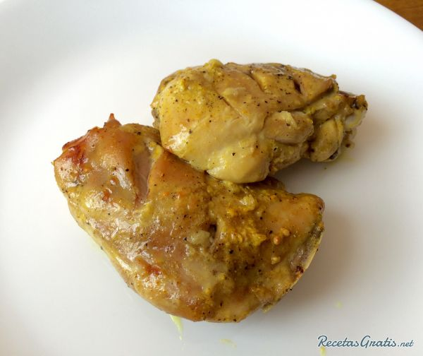

Entre la textura melosa y suavidad del risotto y la delicadeza y potencia de sabor de las vieiras... ¡atención! porque estamos ante un plato de altura... de esos que te harán brillar en cualquier ocasión: risotto verde con vieiras.
Pela los ajos y pártelos por la mitad para retirar su germen (que es la parte que provoca que el ajo repita). Pícalo menudo. Pela las chalotas y pícalas en una juliana fina. Finalmente, lava el pimiento rojo y pícalo también en daditos menudos.
Si has comprado las vieiras frescas, tendrás que limpiarlas. Para ello, abre la concha y separa la carne del molusco de su concha inferior con la ayuda de un cuchillo de puntilla. Retira la membrana o telilla que recubre toda la vieira. Tira la parte oscura y quédate con la parte blanca y con el coral... que es la parte de color naranja brillante. Lávalos en agua fría.
Acerca un cazo al fuego con el caldo de pescado o fumet para calentarlo.
Acerca una cacerola u olla al fuego con el aceite y la mitad de la mantequilla y, cuando estén calientes, pocha las chalotas, el ajo y el pimiento. Deja que se vayan haciendo a fuego suave.
Pasados 5 o 7 minutos, o cuando la chalota ya esté transparente incorpora el arroz y rehógalo durante un minuto. Se trata de nacarar el arroz, es decir, dorarlo ligeramente hasta que se quede brillante y un poco transparente.
Paso 5:
Agrega el vino blanco y sube un poco el fuego hasta que se evapore el arroz. Incorpora en ese momento también las hebras de azafrán. Cuando el alcohol se haya evaporado.
Paso 6:
Remueve hasta que se haya evaporado el alcohol. En ese momento, añade un cazo del caldo, que ya estará caliente y remueve hasta que se evapore. En ese momento, añade otra taza y vuelve a dejar que se evapore sin dejar de remover. Sigue repitiendo este proceso de ir añadiendo el caldo poco a poco, a cazo a cazo, y removiendo hasta que el arroz esté al dente, lo que le llevará unos 17 o 20 minutos.
Paso 7:
Mientras se va haciendo el arroz, calienta una plancha con un hilito de aceite de oliva virgen extra y, cuando esté muy caliente pon las vieiras. Deja dos minutos, dale la vuelta y hazlas un minuto más. Saca de la plancha y reserva. Mientras haces esto, debes tener también cuidado del arroz y removerlo.
Ingredientes:
1 Kg. de huachinango en rebanadas
3 jitomates
1 taza de puré de jitomate en lata
chiles largos o jalapeños
1/2 taza de cebolla picada
2 dientes de ajo picados
2 cucharadas de aceite de oliva
2 cucharadas de aceite vegetal
3 cucharadas de perejil picado
1 cucharada de vinagre
1 cucharadita de azúcar
laurel, tomillo y mejorana, en la cantidad que se desee
orégano
2 cucharadas de alcaparras
1 frasco chico de aceitunas
limón
sal y pimienta
Procedimiento:
Ingredientes:
1 kilo de chile mulato, despepitado y desvenado
125 gramos de chile pasilla, despepitado y desvenado
10 chiles anchos, despepitados y desvenados
5 chiles chipotle, despepitados y desvenados
3 chiles mecos, despepitados y desvenados
1/2 kilo de almendras
1/2 kilo de pasas
1 cucharada de semillas de anís
1 cucharada de cilantro seco
1/2 cucharada de pimienta entera
3 clavos de olor
1 raja de canela
3 rebanadas de pan bolillo, telera o baguette
1 tortilla
5 tabletas de chocolate de mesa
1/2 taza de azúcar
1 cabeza de ajo
3 jitomates, en trozos y sin semillas
Sal, al gusto
Preparación: 30min › Cocción: 2horas › Listo en:2horas30min Calienta la manteca en un sartén o cacerola grande a fuego medio-alto. Fríe todos los chiles cuidando que no se quemen. El chile chipotle debe quemarse ligeramente para evitar que el mole salga muy picoso. Retira del fuego y coloca en un tazón grande. Agrega al mismo sartén las almendras y dóralas uniformemente, cuidando que no se quemen. Pásalas al tazón de los chiles. Sigue el mismo procedimiento con las pasas, luego el anís, cilantro, pimienta, clavos de olor y raja de canela. Fríe en el mismo sartén las rebanadas de pan, luego la tortilla y, finalmente, el chocolate de mesa. Pasa los ingredientes al tazón de los chiles conforme los vayas sacando del sartén. Fríe los trozos de jitomate en otro sartén con muy poca manteca. Una vez listos, pásalos al tazón con los otros ingredientes fritos. Pela la cabeza de ajo y asa los dientes en un comal a fuego medio hasta que tomen un color café, aproximadamente 5 minutos. Agrega al tazón con el resto de los ingredientes. Tuesta el azúcar en un sartén limpio a fuego medio-bajo, cuidando que no se disuelve, y colócala dentro del tazón con el resto de los ingredientes. Muele todos los ingredientes de poco a poco en un procesador de alimentos (o metate, si prefieres). Mezcla bien hasta formar una pasta homogénea. Tu mole está listo para usarse o para guardarse en un frasco de vidrio bien tapado.
Ingredientes:
3 Unidades de Muslos de pollo
12 Diente de Ajo
1 Pizca de Jengibre en polvo
1 Pizca de Curcuma en polvo
1 Pizca de Cardamomo en polvo
2 Cuchara sopera de Azúcar moreno
1 Unidades de Limón
1 Pizca de Sal
1 Pizca de Pimienta.
Para el marinado, en un bol mezcla el yogur con el ajo cortado finamente, el zumo del limón, todas las especias, el azúcar moreno, una pizca de sal y pimienta, mezclar todo muy bien hasta obtener una preparación homogénea.
Limpiar y salpimentar los muslos de pollo, introducirlos en la marinada de yogur al ajo y llevar al refrigerador durante 1 hora mínimo, entre mas tiempo el sabor será mejor.
Transcurrido este tiempo, llevar los muslos a una refractaria con la marinada, hornear a 200ºC durante 45 minutos.
Finalmente servir los muslos de pollo al ajillo y disfrutar, esta receta es perfecta para compartir en familia acompañada de un puré de papa. Si te ha gustado esta receta, tienes algún comentario o inquietud, danos tu opinión.
